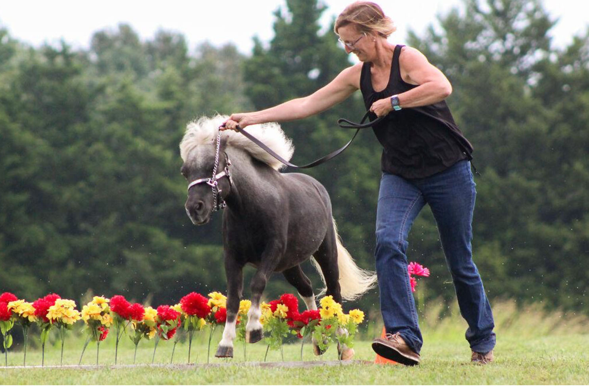

These are few different types of activities people can do outside or inside It might depend on space and equipment you have, but there are variations for everyone.
This is not an exhaustive list of things to do. Other things would be to make a weights station at home. Gallons of water, laundry detergent, and other heavy household items work.
In terms of exercise videos, MadFit is one of my favorites. She does dance fitness, cardio without jumping, and other apartment friendly exercises.
Walking a dog can be a harder exercise than it looks. It is good for you and your furry friend. I know my dogs often times walk me.
Soccer is a very intense exercise to do. The players often get very into the game. It can be a simple game. Kicking the ball is a good test of agility and coordination.
Baseball is an exercise most people can do. Sometimes it is fun to set up fake bases and run around them.
Running is a something that I have noticed more people do. It doesn't require any machines or equipment. People can speed walk, trot, or jog. There is nothing stopping them.
Bike sales have increased since the pandemic started in March. Kids have finally been learning how to ride them, and more families have been craving getting back on the trails.
Football can seem scary. However, it is a fun game to play as a pick up with a group of friends. When I was younger, my dad tried to teach me how to throw a football. It can be a good skill to learn.
Pool access is sometimes an issue, but it is one of the best forms of exercise to do if you can get to one. As a competitive swimmer myself, I have foot/knee problems. Though I can't run, I can swim. I try to go at least two to three times a week.
Fishing is a calming way to get outside. Sometimes if an easy activity is desired, just casting a line around can help. It is more fun on a cool day when the fish are actually biting.
Hanging around with friends at a safe distance is important. Playing outside with a hose or water balloon/water gun is a fun way to get some running in. This can be adapted to make sure social distancing is still being folllowed.

Horseback riding or running around with an animal can be a fun activity. Volunteering at a farm can be a good idea. Horses are very therapeutic. There are several horse ranches out in Columbia. For example, Cedar Creek is always looking for people.